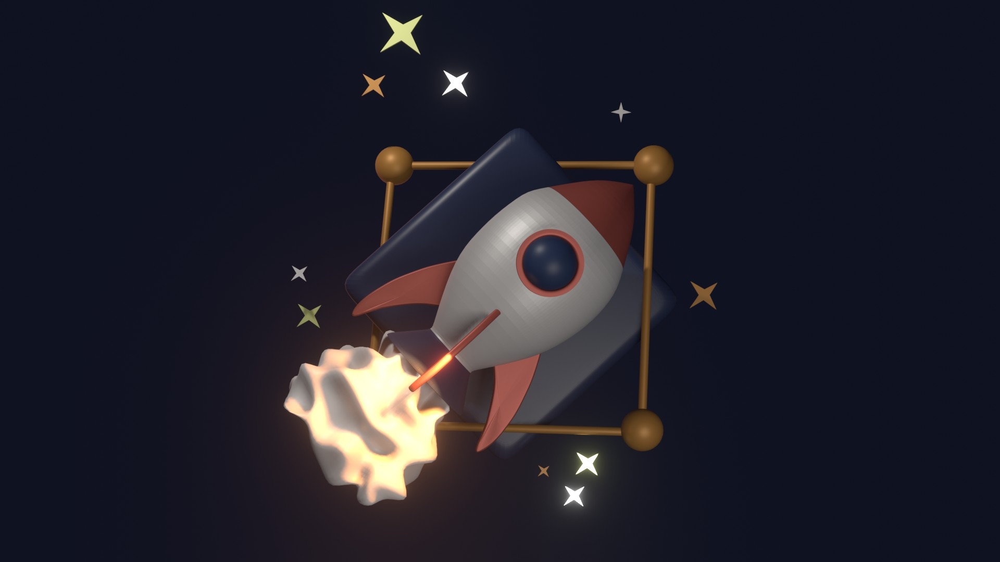
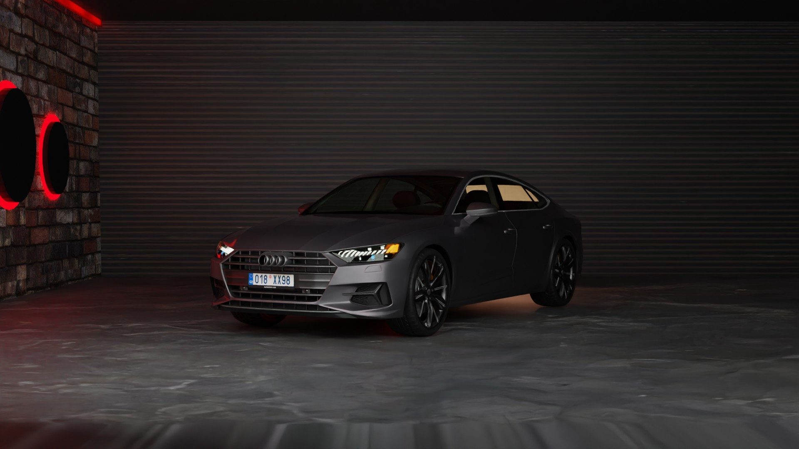

Båda ikonerna skapades i programmet Blender. Målet var att skapa den i Hight Poly-stil och så att den inte skulle vara särskilt realistisk och som skulle kunna användas i illustrationer eller som ikoner på webbsidan.
Båda ikonerna skapades i programmet Blender. Målet var att skapa den i Hight Poly-stil och så att den inte skulle vara särskilt realistisk och som skulle kunna användas i illustrationer eller som ikoner på webbsidan.


Båda scenerna skapades i Blender i Lowpoly-stil. En scen skulle att förmedla den rustika stilen och den där atmosfären i byn på sommaren. Och en annan scen var tänkt att förmedla staden, så jag bestämde mig för att bilen skulle se bra ut i den här scenen.
Köket skulle vara så detaljerat som möjligt, men inte realistiskt. Till detta använde jag även Lowpoly. Som allt mitt arbete skapades den här i Blender. Alla detaljer skapades för hand, både små och stora. Kunden var nöjd med resultatet.
I den här scenen ville jag skapa en inredning i skandinavisk stil och fokusera på en byrå med vacker dekoration. Uppgiften var att skapa en komposition av de objekt som redan finns, så jag skapade inte dessa objekt själv. Men jag placerade och renderade allt också i Blender.
Hela scenen och animationen skapades för Apple-annonsen och allt skulle vara skappat så realistiskt som möjligt. Tanken var att på ett modernt kontor använder alla Apple-teknik. Jag använde Blender för att skapa allt. De flesta av föremålen skapades för hand, men jag laddade ner några av dem och dessa är som (dator, telefon ....)
Uppgiften var att skapa en födelsedagsscen i minimalistisk stil och i pastellfärger. För att göra detta använde jag olika lufttäta former och förmedlade föremålens luftighet för en vitare skonsam effekt.
Jag behövde skapa något ovanligt som ingen hade skapat tidigare, så när jag började skapa den här scenen kom idéerna av sig själva och jag skapade bara. Allt var självskapat. Kunden gillade min idé på grund av färgschemat jag använde och även på grund av själva idén.
Huvuduppgiften för detta projekt var att lyfta fram flaskan i mitten. Jag använde Lowe Poly-tekniken och framhävde flaskan tack vare ljuset. Programmet där jag skapade alla föremålen är en Blender.
Jag tycker att det är en bra teknik och idé att annonsera vilket föremål som helst eftersom scenen kan göras i en mer realistisk stil.
Båda ikonerna skapades i programmet Blender. Målet var att skapa den i Hight Poly-stil och så att den inte skulle vara särskilt realistisk och som skulle kunna användas i illustrationer eller som ikoner på webbsidan.
